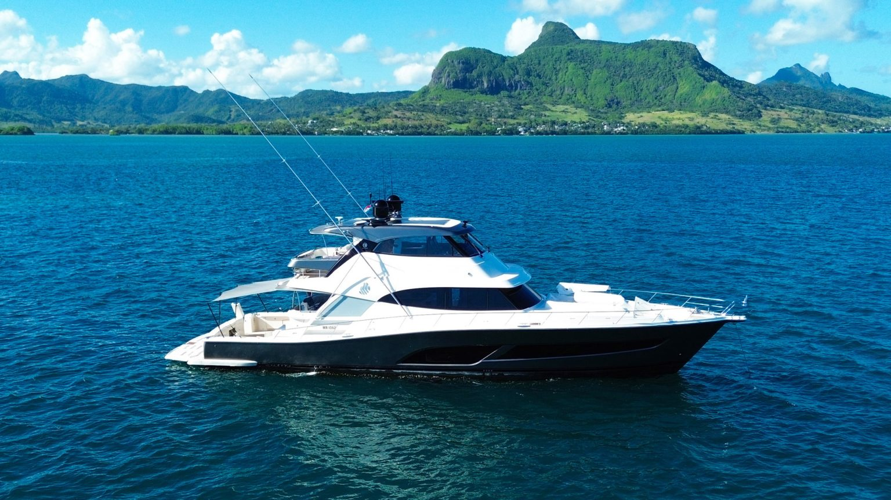
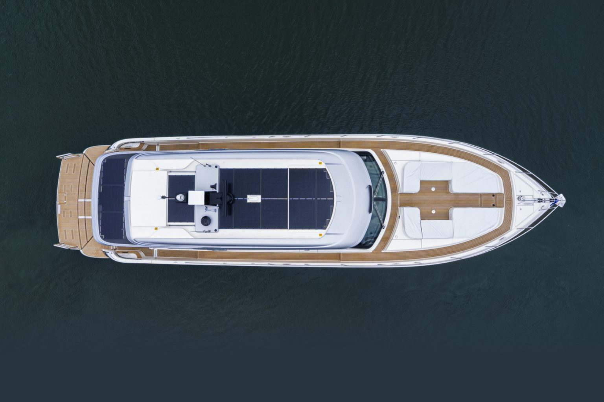

Riviera Unveils Integrated Solar Breakthrough
A new era of silent, low-generator cruising for luxury motor yacht owners.

Australia's Riviera has announced a partnership with Praxis to integrate advanced nano-composite solar technology directly into the construction of its luxury motor yacht fleet. The result is a seamlessly engineered solar solution that reshapes onboard energy management, reduces generator dependency, and extends time at anchor for owners.
A New Benchmark in Marine Energy Innovation
For more than 45 years, Riviera has built its reputation on innovative design, engineering, and craftsmanship. This latest development reflects the company's forward-thinking philosophy: enhancing onboard capability without compromising aesthetics or performance.
Unlike traditional rigid panels mounted atop aluminum frames, the new Praxis system is a 2mm-thin nano-composite "solar skin" bonded directly into the yacht's hardtop during the molding stage of construction. All visible layers are optically transparent, with a sleek black backing that integrates discreetly into Riviera's sculpted superstructures.
The solar surface follows the curvature of each model's hardtop across multiple planes, maximizing usable area. The result: roughly 120% more power output from only about 90% additional surface coverage compared to conventional marine solar installations. This is not an add-on. It is a fully bespoke energy architecture designed for each Riviera model from 39 to 78 feet.
Real-World Performance, Proven at Sea
Extensive testing and early installations are showing compelling results.
A recent 1.8kW installation in New Zealand aboard a 58 Sports Motor Yacht is generating approximately 10kWh per day, significantly extending time at anchor without running the genset. In Mauritius, a Riviera 72 Sports Motor Yacht equipped with an expanded lithium iron phosphate battery bank can achieve up to three days off-grid generator-free. Another owner reports running air conditioning for more than a day and a half purely on stored solar.
On an extended passage in Australia, from Queensland's Gold Coast to Adelaide in South Australia, a Riviera 6800 Sport Yacht Platinum Edition fitted with the system maintained onboard loads while underway, including navigation equipment, refrigeration, lighting, and digital controls.
Feeding directly into the house battery bank, the integrated array supports critical equipment via the C-Zone system. The system is shade tolerant, with different regions of the surface operating dynamically to optimize total output.
For owners, the benefits are direct: fewer generator hours, reduced diesel consumption, lower operating costs, and a quieter boat at anchor.
Engineered for the Marine Environment
Praxis' proprietary nano-composite technology is engineered at the microscopic level for defect-free composite strength. The panels are 85% lighter than traditional rooftop systems and built from materials aligned with the yacht's own composite construction, giving them durability against salt, heat, offshore movement, and impact.
The surfaces are fully waterproof, virtually unbreakable, and available in matte, gloss, or non-skid finishes for both new and retrofit applications.

"Solar integration had to meet the same structural and aesthetic standards as the yacht itself," says Dan Henderson, Design and Engineering Director at Riviera Australia. "It was essential that this innovation enhance, rather than interrupt, the Riviera design language."
The collaboration, which began three years ago, involved close work between Riviera's design and engineering teams and Praxis' specialists to refine curvature, optimize placement, and ensure seamless integration into the mold-building process.
"When two innovation-driven industry leaders come together, the goal is to expand the art of the possible. Riviera and Praxis have combined expertise to integrate silent luxury into the marine environment and set a new benchmark for solar innovation." - Katie Donaldson, Founder and Executive Director, Praxis
Responding to a Changing Global Market
Owner expectations have evolved significantly over the past two decades. Modern yachts function as fully equipped floating residences, with digital systems, climate control, and hospitality-level amenities all demanding robust energy management.
At the same time, marina regulations in some regions are limiting shore-power charging options. Integrated solar lets owners recharge underway before arrival, increasing autonomy and flexibility.
Sustainability is an increasing consideration across the global marine sector, but Riviera emphasizes that this innovation is fundamentally about the experience.
For Australian owners who favor extended off-grid cruising, the return on investment can be significant. In markets like the United States, where marina-to-marina cruising is more common, the benefits show up as reduced operating costs and a quieter, more comfortable boat.
Now Available Across the Riviera Range
Integrated solar is now offered as an option within Riviera's new-build specification, with bespoke designs being finalized across the model range. Retrofit solutions are also available for existing Riviera yachts via the Riviera Aftermarket service at the company's manufacturing facility on the Gold Coast in Australia.
With this collaboration, Riviera signals a clear direction for the future of luxury motor yacht construction: intelligent, integrated, and experience-led.
From the Haley Yachts desk
Riviera is one of the most rigorously built production yachts on the water, and Clark Haley/OneWater Yacht Group can place new builds with this option from the factory or coordinate retrofits through Riviera Aftermarket for current owners. If you want to talk through what integrated solar looks like on a specific hull, give Clark a call.